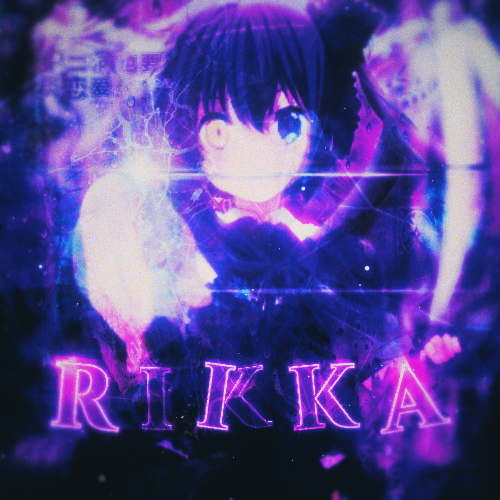
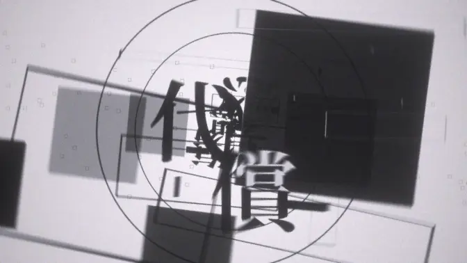
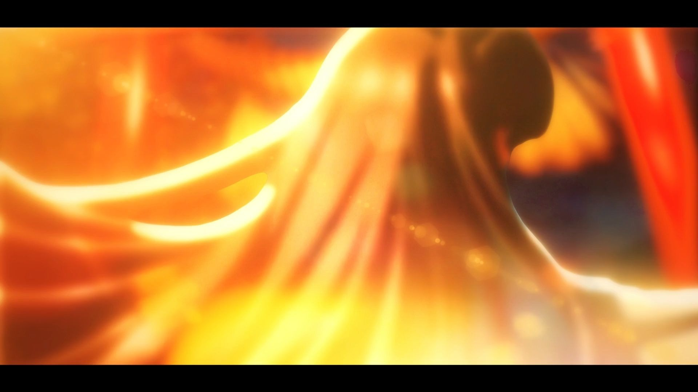
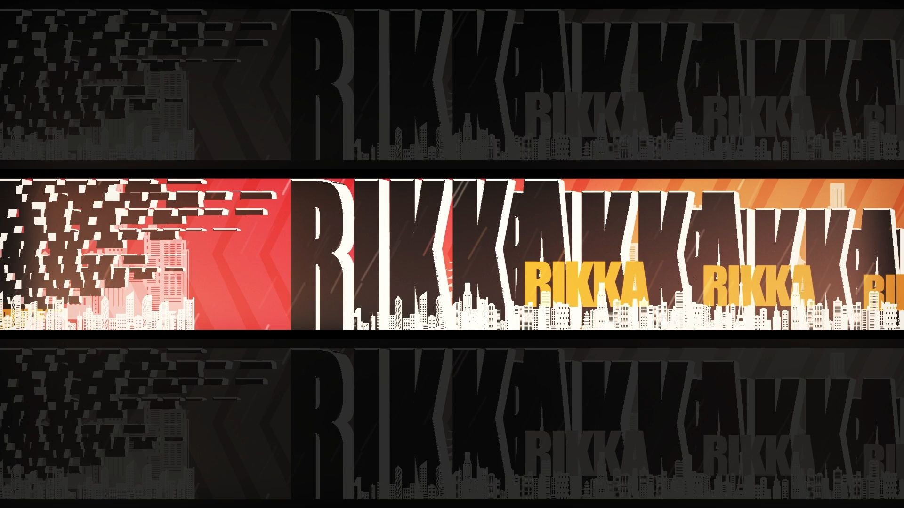
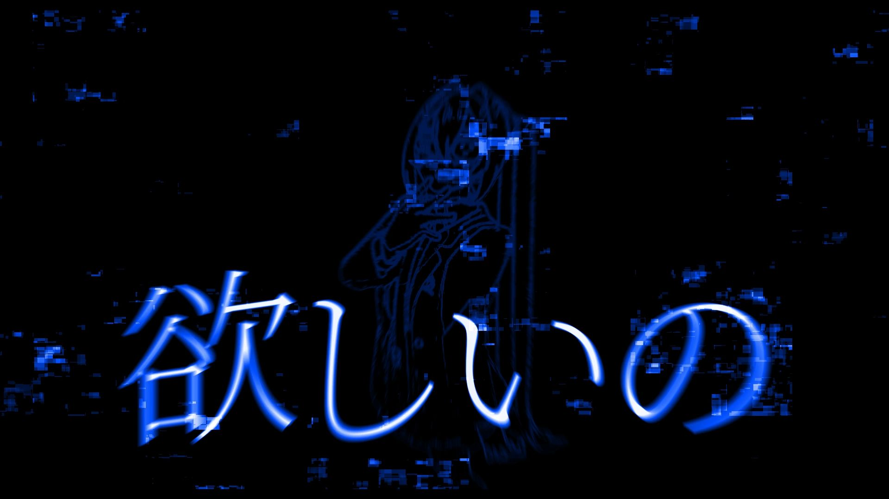
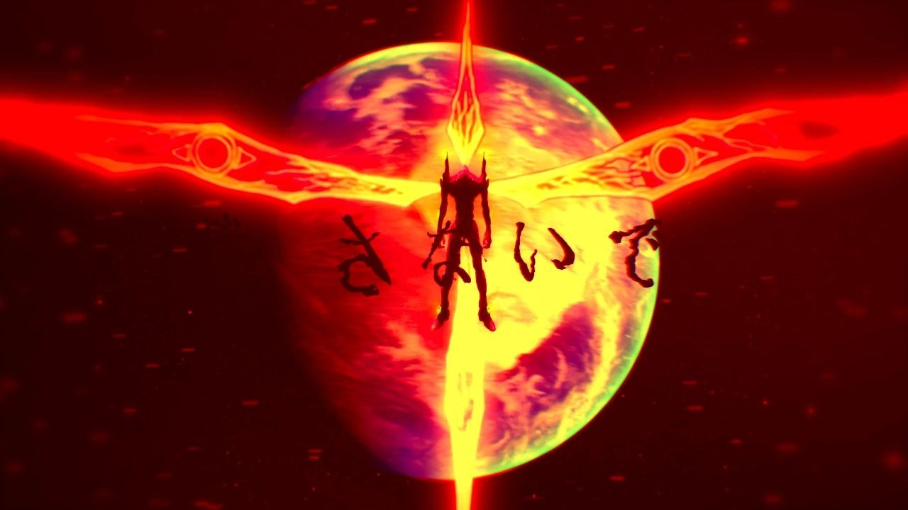
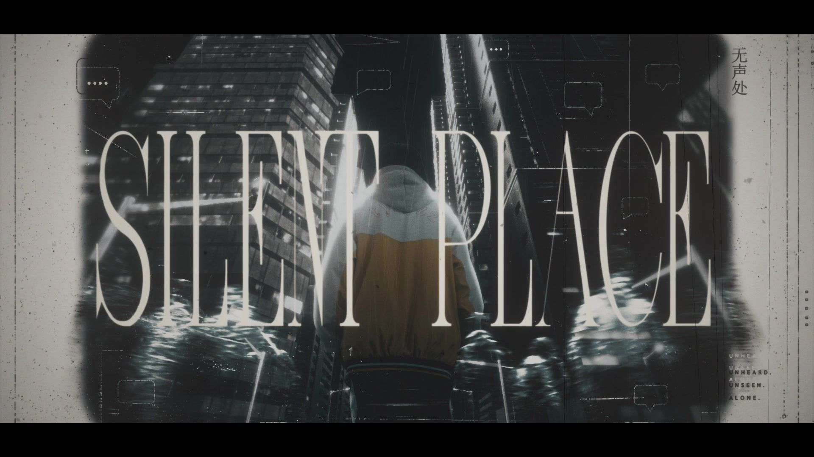

PROTOCOL 00 // REALITY HANDSHAKE
越过现实边界
在特效、三维与生成式 AI 之间，构筑属于自己的数字世界。
PROTOCOL 00 // REALITY HANDSHAKE
在特效、三维与生成式 AI 之间，构筑属于自己的数字世界。
LIVE PAGE METRICS / NOT DEVICE LOAD
IDENTITY LINK COMPLETE
你的个人空间已经准备完成。
BUILD INVENTORY // PROJECTS
围绕视觉设计、本地生成式 AI 与智能体构建的个人实验室。
使用 After Effects 进行剪辑、视觉特效与 PV 创作。
ACTIVE通过 ComfyUI 与开源模型在本地生成图像和视频。
ONLINE使用各种 AI Agent 完成有趣的创意项目与自动化实验。
EXPERIMENT
OWNER IDENTITY // PROFILE
18 岁，高三在读。视觉设计与生成式 AI 创作者。拥有 3 年 After Effects 使用经验，喜欢剪辑、VFX 与 PV，也使用 Blender 构建三维画面；在本地通过 ComfyUI 和开源模型生成图像与视频，并用 AI Agent 探索各种有趣项目。动漫、轻小说与 Galgame 爱好者，六年老二次元。
MOTION DESIGN // SELECTED WORKS
选择封面后将在新页面打开对应的 Bilibili 视频。

01:19 FILE 01 / PV PRACTICEWATCH ↗ 【PV练习】妄想感伤代偿联盟 00:34 FILE 02 / VFX-RE0WATCH ↗ 【VFX/RE0】从零开始
00:19 FILE 03 / VFX STUDYWATCH ↗ 【VFX】仿 son1x
00:18 FILE 04 / MG STUDYWATCH ↗ 【MG/仿】绝区零风格
00:26 FILE 05 / TYPOGRAPHIC PVWATCH ↗ 【文字PV】视奸 / DECO*27
01:51 FILE 06 / PV PRACTICEWATCH ↗ 【PV练习】新世纪福音战士 00:43 FILE 07 / VFX STUDYWATCH ↗ 仿羁绊者 VFX
00:45 FILE 08 / VISUAL MESSAGEWATCH ↗ 【校园防霸凌】无声处